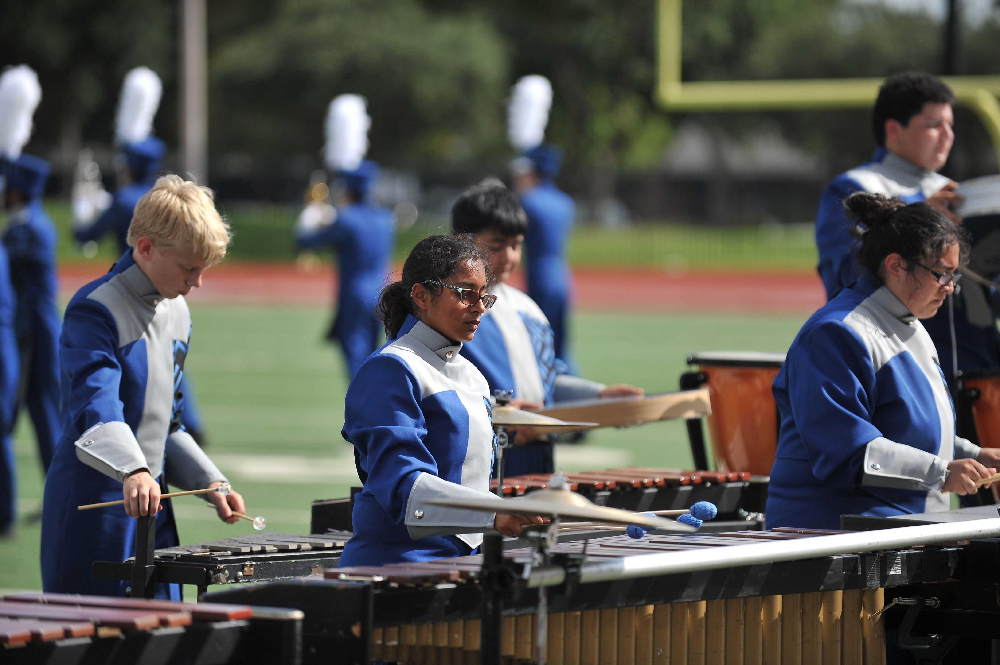

The Lion Marching Band consists of all students enrolled in the band program. Students meet separately during their concert band period during the school day and rehearse together after school. Summer rehearsals begin prior to the start of the fall semester. The Lion Marching Band is the most visible part of the RLT Band Program and is one of the most successful organizations at RLT. The group performs at all pep-rallies and Lion varsity football games, as well as competing at the UIL Marching Contest.
The R.L. Turner High School Colorguard and Winterguard consists of students from all four high school grade levels. They train as athletes to perfect their equipment skills with dance movement and marching band drills to perform as artists during Fall football game halftime shows and competitions as well as indoor gymnasium Spring performances and competitions. For additional information about the Colorguard and Winterguard, please contact a director.
The Drumline meets as a separate class during the fall semester. In addition to being part of the marching band, this ensemble works together towards separate competitive festivals and concerts. All R.L. Turner percussionists will be a part of this class during the fall semester and then moved to one of the concert bands for the remainder of the year.
The Wind Ensemble consists of the most accomplished musicians in the band program. This award winning group is a perennial UIL Sweepstakes recipient, as well as having been recognized for outstanding performances at numerous music festivals. The Wind Ensemble consists of the most accomplished musicians in the band program. This award winning group is a perennial UIL Sweepstakes recipient, as well as having been recognized for outstanding performances at numerous music festivals. All three concert groups perform several times during the spring including at the Pre-UIL and UIL contests, the spring trip festival, and the year-end spring concert.
The Symphonic Band is dedicated to the continued development of quality student musicians in the band program. This group has also been recognized for superior performance at both UIL and various music festivals.The Concert Band is committed to the improvement and maturation of younger students, both musically and academically. All three concert groups perform several times during the spring including at the pre-UIL and UIL contests, the spring trip festival, and the year-end spring concert.
The Concert Band is committed to the improvement and maturation of younger students, both musically and academically. All three concert groups perform several times during the year including the Winter Concert, Preview Concert, as well as the Spring Concert.